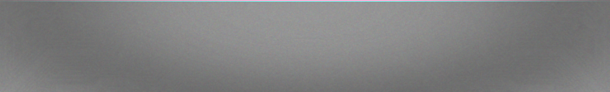

STORY MODE
正在构筑世界线…
← 主页
STORY MODE
即时台词
播放
编辑
全屏
全屏中 · Esc

即时台词
LIVE
×
角色
文字（打字机显示，可配合语音）
动作（可选）
语音来源
选择音频
音频列表
文字合成
选择文件
未选择文件
音频仅在本地播放，不会上传或保存到服务器。
文件夹（character/sounds/）
音频文件
播放 character/sounds/ 下已有的音频，不上传、不落盘。
需服务端配置 TTS 引擎（EMOTE_TTS_BIN）；未配置时会提示改用选择音频。
开口说话
停止
剧本
角色表
保存
＋ 新增行
角色
＋
建
动作宏
＋
建
默认眨眼
眼皮
属性
场景
标题
背景
搜索后点图库项选中，或拖到剧本行
✕
没有匹配的背景
背景音乐
拖音频到右侧竖轨；点段落配置
✕
没有匹配的音乐
BGM 段
循环播放
覆盖第
—
句
淡入
淡出
▶ 播放
✕ 删除
第
1
行
说话者
显示名
留空＝沿用上一句
⟲
设默认
文本
AUTO 停顿（ms，留空＝1200）
登台角色
＋ 添加角色
一张卡一个角色：角色与这一句的上/下场 · 位置与缩放 · 本行的动作与语音 · 绑定（模型、语音目录）。第 1 行的位置就是全场默认，后面不写就沿用上一句。